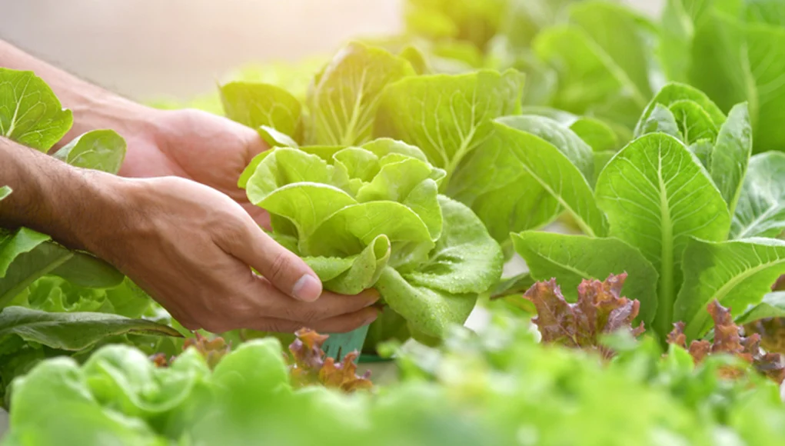
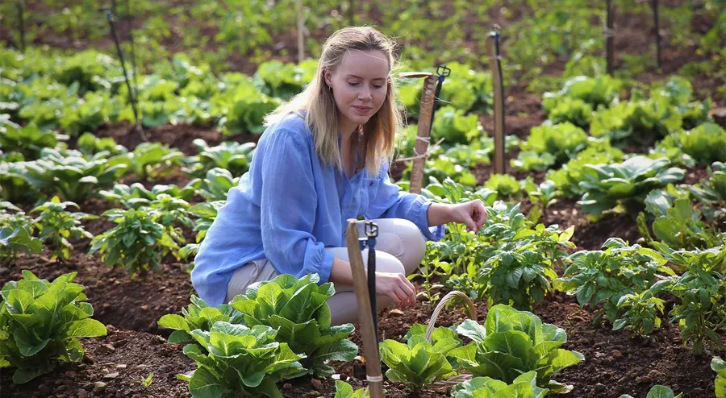
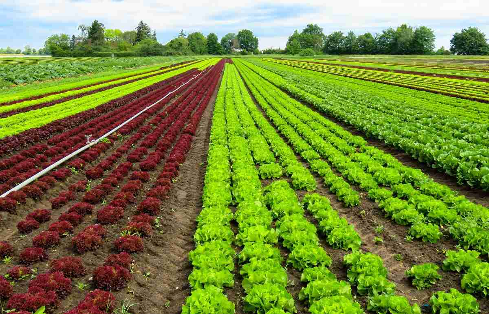

To ensure sustainable agricultural development and food security in Sri Lanka through innovative research, technology dissemination, and farmer-centric services.
To be a leading agricultural institution dedicated to enhancing the livelihoods of farmers and contributing to national food and nutrition security.
Get expert advice on transitioning to organic farming practices and sustainable agriculture techniques.
Assessment of soil quality and health to optimize crop production and minimize environmental impact.
Implement water-saving strategies and technologies to conserve water resources and improve irrigation efficiency.
Address: 123 Main Street, Colombo, Sri Lanka
Phone: +94 11 123 4567
Email: info@agriculture.lk